Journal Week 41
Table of Contents
Referencias
2026-10-08
[09:45]
ESta semana fue el workshop de interdisciplinary compleyx systems para el cual preparé el póster durante la semana pasada. LA otra semana nos dieron acceso a CLaude TEam que va a estar escribiendo la mayoría de los logs.
[09:47]
Ahora está haciendo funcionar la placa en mint.
[10:22] Driver PDAQ Linux
Log del trabajo con Claude para usar la PersonalDaq/3001 en Linux (Mint) sin Windows ni DaqX64.dll. Informe prolijo en PDF: file:///home/ignacio/Documentos/pdaq/V3/validacion/informe/informe_driver_pdaq_linux.pdf
Resultado
- Driver en espacio de usuario con la misma API que PyIOTech: los scripts del laboratorio corren sin cambios.
- Copia de trabajo:
~/Documentos/pdaq/Controlador_Linux/(copia de “Software Compu Sala/Controlador”, cadaPyIOTeches un symlink al driver nuevo). - Probados con la placa:
measure_interface.py(con y sin ganancias, modos finito e infinito) yreal_time_grapher_más_puntos.py(multicanal, lock-in). Uso:
cd ~/Documentos/pdaq/Controlador_Linux ../pdaq-env/bin/python measure_interface.py- Código:
~/Documentos/pdaq/V3/PyIOTech/(daq.pyAPI,_pdaq3k.pyUSB,daqh.pyconstantes). README en~/Documentos/pdaq/V3/README.md.
Cómo se resolvió (para referencia futura)
- Por qué no andaba antes: la placa es un Cypress FX2LP que enumera sin firmware (
0622:0470, bcdDevice0x2C01). En Windowspdaq3kld.sysle carga el firmware del 8051 antes de que USBPcap lo vea, por eso no aparecía en las capturas. Extraje el firmware depdaq3kld.sys(tabla de selección por bcdDevice0x2Cxx→ “PDaq3K Series Loader”) →pdaq3k_fx2.ihx. Se carga con request0xA0y la placa re-enumera como0622:2c01. - FPGA: Spartan-3
3s400ft256, bitstream de 212392 B por0xB2+ 104 ×0xB3(último bloque de 1448 B sin relleno; V2.2 lo rellenaba con0xFF, error). - Protocolo:
0xB4escribe/lee registros de la FPGA (wIndex= registro). Mapa de registros con nombres sacado depdaq3k.sys(función de nombres en0x1df28): 0 AcqControl, 1 ScanListFIFO, 2/3/5 divisor del pacer (48 MHz/(N+1)), 15 VariableConvRate (sólo LCR; Windows escribe basura no inicializada), 16 y 28–31 DAC, 88 DmaControl, 89 TrigControl. Datos uint16 por bulk0x82. - Scan list: entrada de 32 bits = settle<<29 | ganancia<<24 | diferencial 0x400000 | canal<<4 | último 0x4 | 0x2 (de
adcSetScanSeq3Kenpdaq3k.sys). - Calibración de fábrica: EEPROM (
0xB8) = header40010001+ por rango x1..x100 tres float32 (m₊−1, m₋−1, b[V]). La DLL usa m = 1+(m₊−1+m₋−1)/2 y V = m·Vcrudo + b (deConvertExpCalConstantToCalConstantenDaqX64.dll). Confirmado con los barridos de CC del AFG. Activada por defecto;daqDevice(..., calibrate=False)da cuentas crudas. - Capturas USBPcap originales: pendrive KINGSTON,
Posgrado/Pruebas Placa PS3K/Pruebas definitivas/. Herramientas para reproducirlas:V3/pcap_to_ops.py,V3/replay.py. - Reglas udev instaladas:
/etc/udev/rules.d/99-pdaq3001.rules(placa, 0470 y 2c01) y99-tektronix-usbtmc.rules(AFG).
Banco de pruebas
AFG3021B por USBTMC (/dev/usbtmc0) a CH0 y CH1 en diferencial, misma señal en ambos. Control automático con límites por software (V3/validacion/afg.py): High Z obligatorio, |offset|+Vpp/2 ≤ 8 V, verificación por lectura antes de habilitar la salida. Batería: V3/validacion/pruebas_afg.py; figuras: V3/validacion/figuras_validacion.py.
Resultados
| Prueba | Resultado |
|---|---|
| Arranque en frío | 5,3 s (firmware FX2 + FPGA); aperturas siguientes 0,12 s |
| Caudal | 999 996 muestras/s sostenidas 20 s |
| Continuidad | 10 M muestras a 1 MS/s a disco, desvío máx 17 ns (≪ 1 µs) |
| Linealidad x1 | residuo < 0,8 mV en ±8 V |
| Ganancia con calibración | +0,22 a +0,49 % vs AFG en x1..x100 (crudo: −0,3 a −1,7 %) |
| Offset con calibración | −7,1 ± 0,2 mV en CH0 (crudo: −7,2 a +2,1 mV) |
| Pasa altos | no se ve con el AFG (escalón de 2 V: deriva 0,01 mV en 14 s) |
| Respuesta en amplitud | plana ±0,05 % de 0,1 a 100 Hz; −2,3 % a 200 kHz |
| Retardo CH1−CH0 | 1,00 µs (≥ 100 kHz), ~1,15 µs entre 100 Hz y 3 kHz |
| Frecuencia | 1000,0071 Hz con el AFG en 1000 Hz (7 ppm) |
Transferencia en CC y no linealidad:
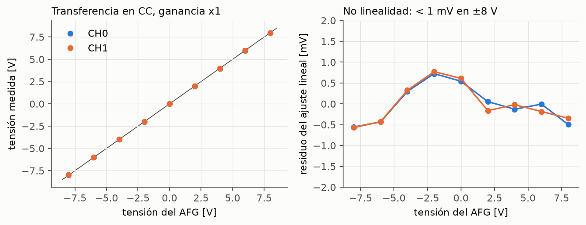
Calibración de fábrica aplicada (la dispersión entre rangos baja de 1,4 % a 0,27 %; el remanente común de +0,4 % y −7 mV es compatible con la exactitud del AFG, ~1 %):
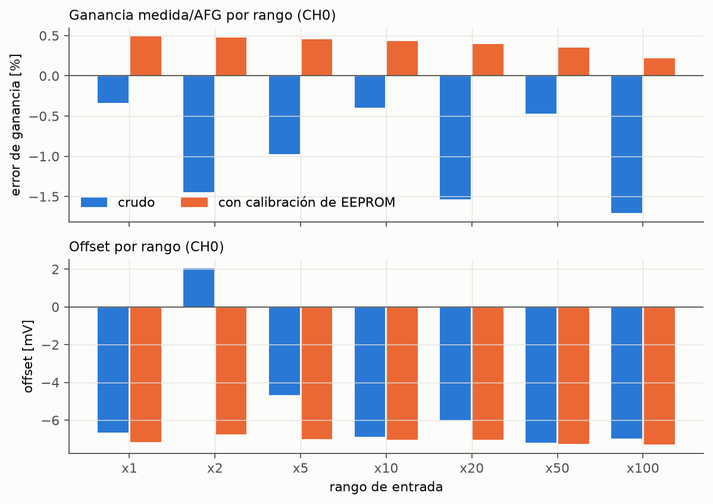
Seno de 4 Vpp a 1 MS/s y continuidad de 10 s (una muestra perdida = salto de 1 µs):
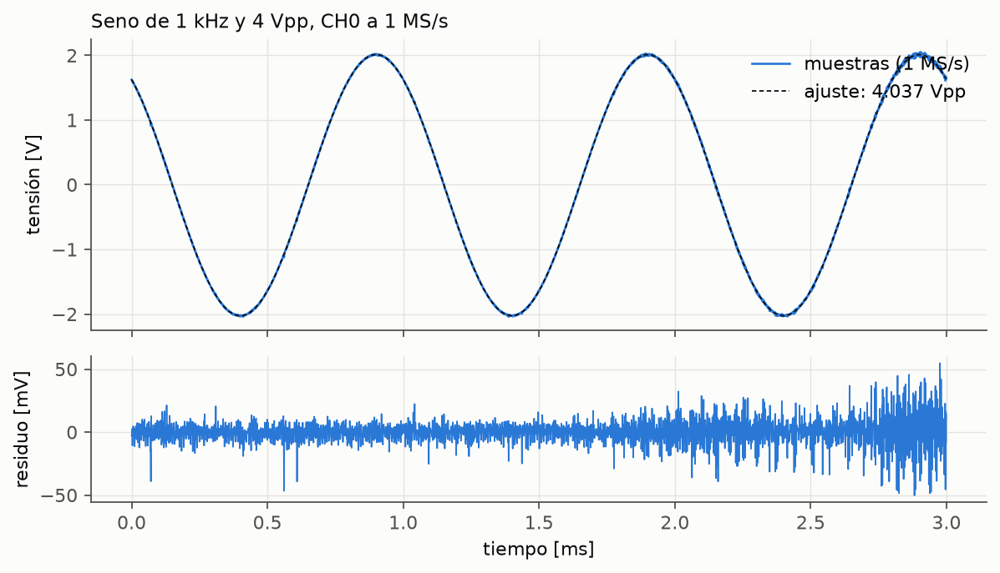
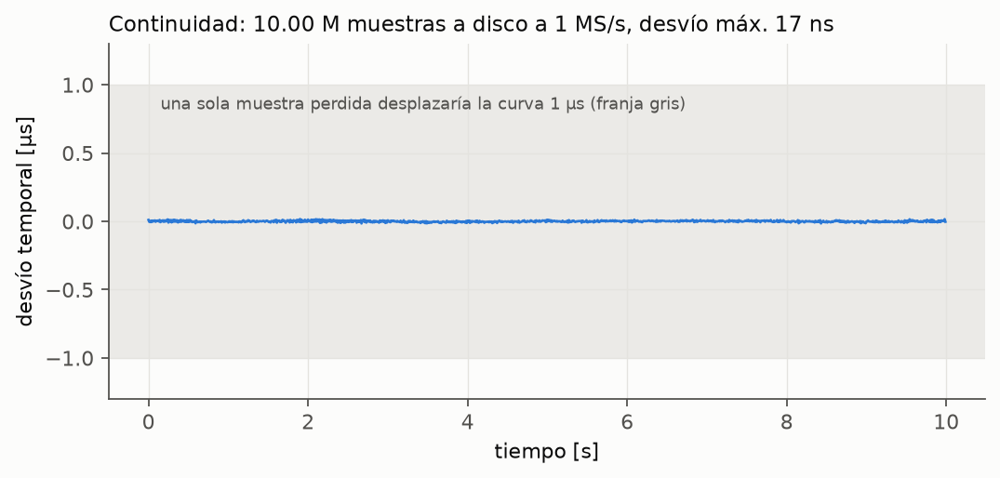
Caudal USB:
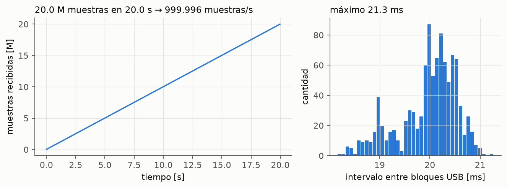
Búsqueda del pasa altos (escalones con la salida siempre prendida y respuesta en frecuencia):
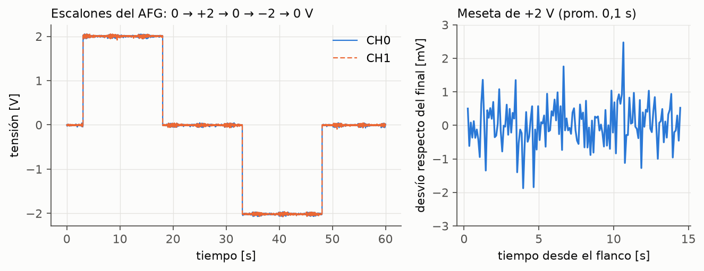
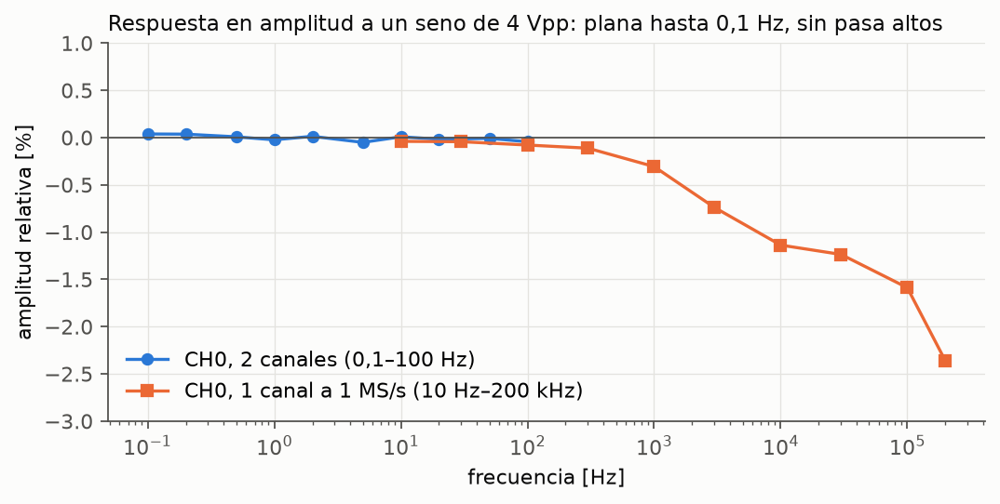
Retardo entre canales (importante para el lock-in; Formatter.py ya suma i*1e-6 por canal):
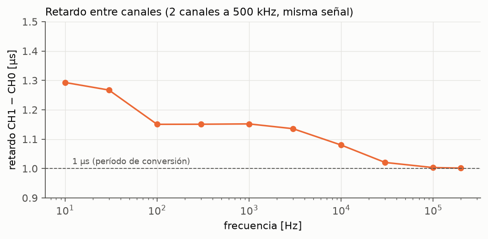
Ruido impulsivo externo, coincidente en ambos canales (picos de hasta 250 mV con el generador conectado; con entradas abiertas 0,6 mV rms). En x100 satura ~0,5 % de las muestras:
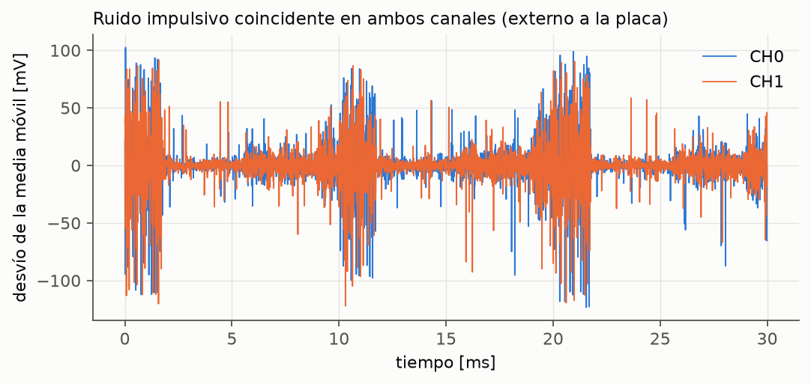
1 MS/s total (2 × 500 kHz, settle 1 µs) y resampleo con FDF — seno de 50 kHz, 4 Vpp
Configuración del lock-in. Análisis con las funciones del lab sin modificar (get_converted_data, resample, get_amplitude_and_phase, FDF de pseudopyroomacoustics.py). Script: V3/validacion/analisis_50kHz_fdf.py.
| Medición | Sin corrección (t0 = 0) | Con FDF (t0 = −0,5) |
|---|---|---|
| Desfase CH1−CH0 (ajuste senoidal) | 18,167° | 0,166° |
| Fase del lock-in (Butter 100 Hz) | 18,166° ± 0,006° | 0,166° ± 0,006° |
- El FDF corrige el retardo de multiplexado. El residuo de 0,17° es real: el retardo entre canales es 1,0093 ± 0,0003 µs (9 ns más que 1 µs), estable en 5 s.
- Ganancia del FDF a 50 kHz: 0,9996.
- Continuidad a 1 MS/s total: 2,5 M scans a disco en 5 s, desvío máx 2 ns (un scan perdido = 2 µs).
- Ojo, amplitud del lock-in: da 1,974 V contra 2,020 V de CH1 (−2,3 %).
reconstruct_reference_and_quadraturenormaliza la referencia conmax(reference), que incluye los picos del ruido impulsivo. Normalizar conAr(FFT) o con la envolvente media de Hilbert evitaría el sesgo. - Ojo, CH0 ≠ CH1 en frecuencia: con la misma señal CH0 cae respecto de CH1 +0,02 % a 1 kHz, +0,44 % a 10 kHz, +0,9 % a 30–50 kHz, +1,1 % a 100–200 kHz. Pasa también con CH0 solo (no es el multiplexado). Falta ver si es la placa o el cableado → intercambiar cables. Importa para cocientes de amplitud en el lock-in.
- Espectro: SFDR 57 dB limitado por un tono externo de 121,54 kHz (−57 dBc) y su armónico en 243 kHz, en ambos canales (¿fuente conmutada?), y 50 Hz a −68 dBc.
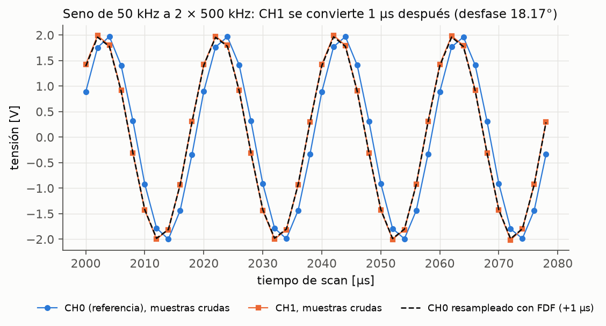
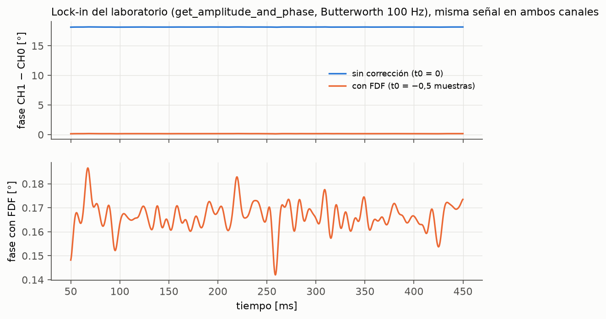
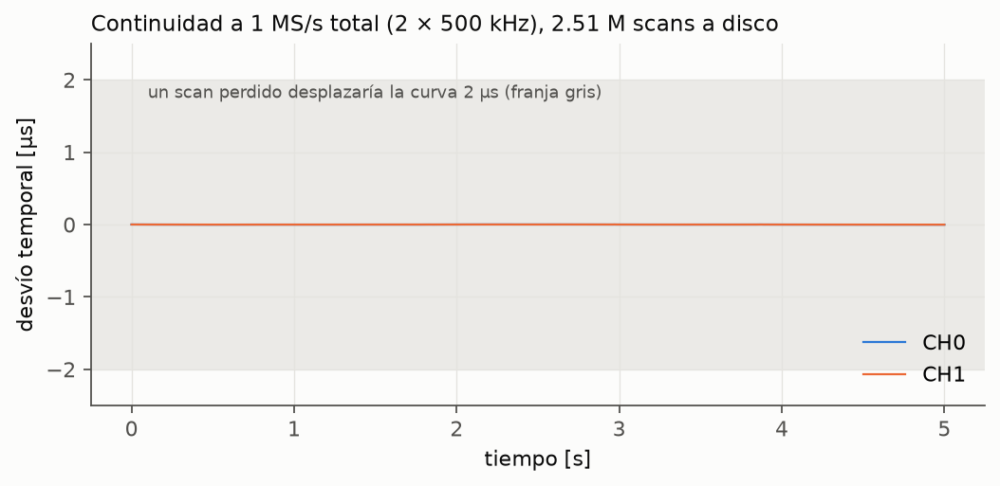
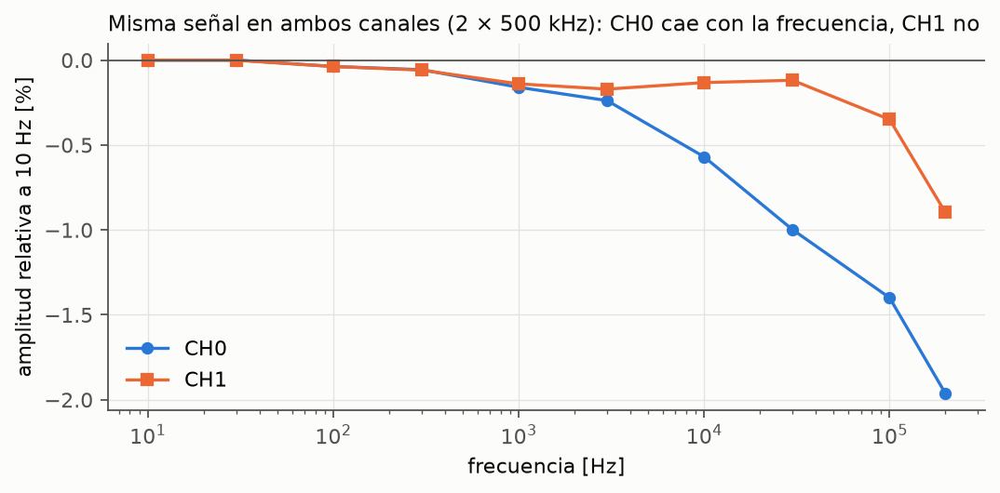
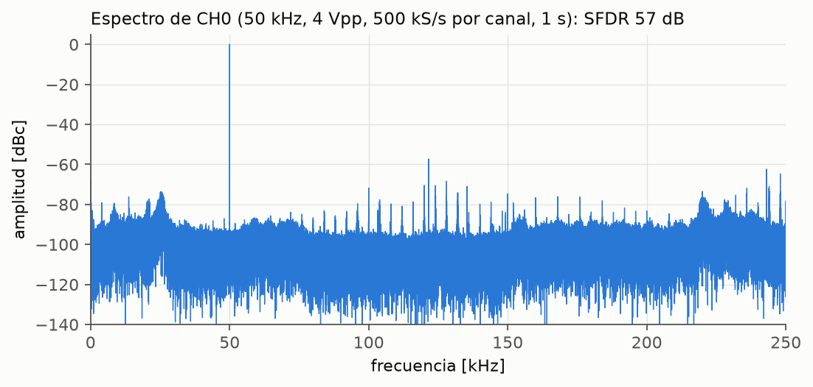
RLC serie y lock-in
Circuito en protoboard: AFG(+) → L (10 mH) → R (360 Ω) → C (560 pF) → AFG(−). CH0 = referencia en bornes del AFG; CH1 diferencial sobre R (HI del lado de L, LO del lado de C → R no está a masa: los bornes de CH1 quedan a ~2·Vref cerca de resonancia, ojo con el modo común).
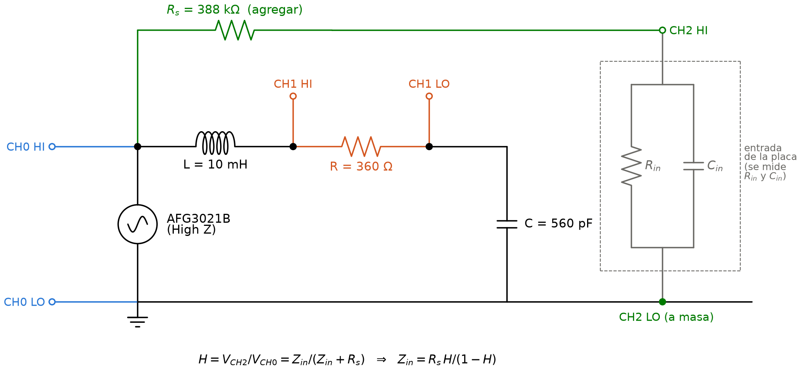
- Barrido 20–150 kHz a 0,2 Vpp (amplitud baja por el modo común), 2 canales a 500 kHz, x10 ambos. Scripts:
V3/validacion/rlc_barrido.py,analisis_zin_rlc.py. - Incertezas por punto: dispersión de H entre 20 bloques de 10 ms (mediana 0,06 %). Script:
V3/validacion/figura_rlc.py. - RLC serie con pérdidas: χ²red ≈ 10⁵ (no describe la fase a baja f: +53° en vez de → +90°).
Modelo completo: + capacitancia propia de L (CL) + fuga de modo común en CH1, VCH1 = (VA−VB) + k·(VA+VB)/2, k = k₀ + jωτk → χ²red = 11,6, residuos < 0,4 %:
L = 8,27 ± 0,03 mH C = 751 ± 2 pF RL = 1141 ± 4 Ω CL = 10,1 ± 0,2 pF k₀ = 0,01265 ± 0,00002 (CMRR ≈ 38 dB) τk = −80,7 ± 0,7 ns f₀ = 63,862 ± 0,008 kHz ρ(L,C) = −0,998 Ojo: L y C muy anticorrelacionados → f₀ bien determinada, pero L y C individuales dependen del modelo (−17 % / +34 % vs nominal). Medir L y C con LCR. El “27 kΩ ∥ 42 pF” de antes era una descripción efectiva, descartada (Zin real abajo).
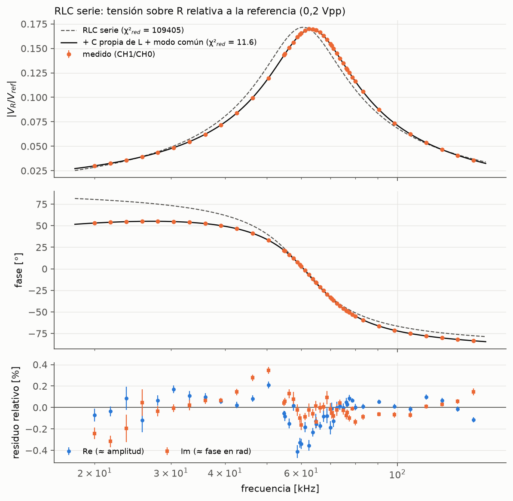
- Lock-in del lab (
get_amplitude_and_phase) vs ajuste senoidal de los mismos datos:- Fase: ±0,13° (0,3° a 20 kHz con VR = 6 mVpp). Algoritmo sin sesgo con señales sintéticas: −0,1 % y < 0,01° hasta 200 kHz.
- Amplitud: −42 % (!).
reconstruct_reference_and_quadraturenormaliza conmax(reference)y CH0 tenía 18 mV rms de ruido impulsivo sobre 97 mV de amplitud. Con la mediana de |Hilbert| el sesgo desaparece hasta 60 kHz (sube a +7,5 % a 150 kHz). Mejor opción: normalizar con un ajuste por cuadrados mínimos afr.
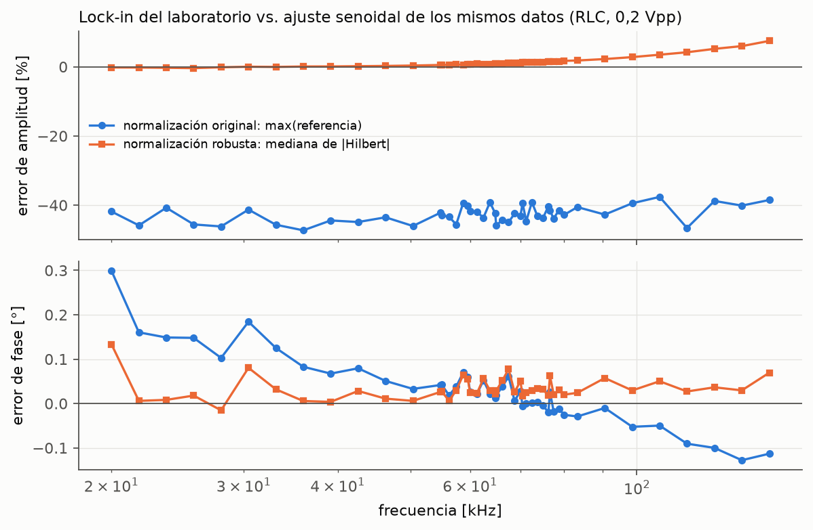
Impedancia de entrada (CH2 HI)
Divisor Rs = 388 kΩ (tester) del AFG(+) a CH2 HI, CH2 LO a masa (ver circuito). Zin = Rs·H/(1−H). Script: V3/validacion/zin_barrido.py.
- Rin = 46 ± 5 MΩ ∥ Cin = 4,57 ± 0,03 pF (incluye protoboard; C propia de Rs 0,16 pF). La carga de la placa es despreciable → no explica lo del RLC.
- Nota: un primer barrido usó x10 en CH2 y saturó (CH2 ve ~99 % de la señal, no ~6 % como predecía el modelo de 27 kΩ). Dio “582 kΩ” y un “retardo de 1,8 µs” falsos → descartado. El script ahora aborta si hay muestras saturadas.
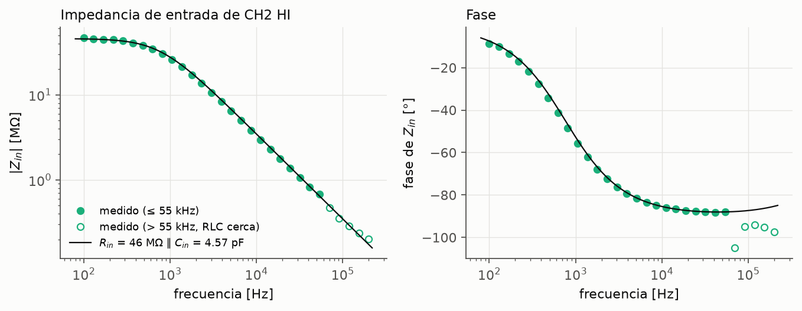
Comparación con el Apéndice B de la Tesis
Fuente de la Tesis clonada de GitHub en ~/Documentos/Manuscrito-Tesis-Licenciatura (apéndices en Entradas/apendice_00.tex y apendice_01.tex). Datos crudos del Apéndice B: Backup.../Placa PS3K/RLC Barrido/Versión 2.0/Barrido 2 (jun-2025, 2 canales a 500 kHz, x1, 5 Vpp). Reanálisis: V3/validacion/tesis_reanalisis.py, comparacion_modelos.py, figura_tesis.py.
- Base de tiempo de la Tesis OK: frecuencia medida = nominal +8 ppm (con 2 canales a 500 kHz no hay factor 2).
- Con σH ≈ 0,01 % la diferencia de respuesta CH1/CH0 (~1 %) domina → corregida con C₁₀(f) medido hoy en la misma configuración.
- Ajustes (Tesis corregida / hoy): RLC serie χ²red 29281 / 109405; fenomenológico de la Tesis 2720 / 4286 con fc = 13,1 ± 1,4 / 9,4 ± 0,6 kHz; CL + modo común 69 / 11,6. Se recuperan f₀ = 75–76 kHz y Q ≈ 2 de la Tesis.
- Misma fenomenología en ambos circuitos. El modo común la describe mejor, pero en el circuito de la Tesis pide k₀ ≈ 10 % y CL < 0 (no físico) → mecanismo NO establecido. El término −arctan(fc/f) de la Tesis es un atraso (un pasa altos sería +arctan).
- “Barrido R a Tierra” de la Tesis sólo cubre 60–90 kHz (100 scans/archivo): no discrimina. Falta un barrido con R a masa por debajo de 40 kHz.
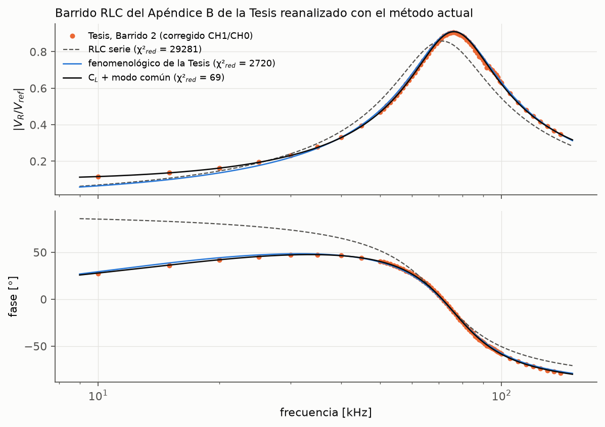
El PDF tiene ahora una sección “Física y modelos” con las ecuaciones de todo: calibración, temporización, ajuste senoidal e incertezas, FDF y lock-in, RLC, capacitancia propia de la bobina, modo común, Zin y transferencia entre canales.
Pruebas de la hipótesis del modo común (resultado: descartada)
Esquemas: V3/validacion/circuitos/prueba1_cmrr.pdf, prueba2_r_a_masa.pdf. Scripts: cmrr_barrido.py, rlc_r_masa.py.
- Prueba 1, CH1 HI y LO juntos al AFG(+): CMRR = 80 dB (k = 0,010 %) hasta 10 kHz, 70 dB a 50 kHz, 56 dB a 150 kHz. El ajuste pedía k ≈ 1,3 % → el modo común NO es la causa. (El término del modelo actúa como descripción efectiva de “algo en fase con Vref que llega a CH1”.)
- Prueba 2, R a masa (L → C → R → masa, CH1 LO a masa): RLC casi ideal. Fase +88,5° a 10 kHz y −88,4° a 150 kHz; pico 0,53 (antes 0,17); resonancia ≈ 69,5 kHz y angosta (Q ≈ 7). La anomalía desaparece: tiene que ver con medir con CH1 sobre nodos no a masa, mecanismo sin identificar.
- Probé un modelo de “inyección de carga del multiplexor” (R equivalente desde V0 a los bornes de CH1): no ajusta en ninguno de los dos circuitos → descartado también.
- Aun con R a masa, el RLC serie deja residuos de hasta 14° cerca de la resonancia (σ por punto 0,004 %). Ideas: no linealidad de la bobina (probar a menor amplitud), pérdidas dependientes de f (modelos simples no alcanzan).
Propuesta para el sensor: medir VC (un canal por sensor, contra masa)
- Restricción: C (sensor) a masa y un canal por sensor. VR = jωRC·VC → misma info; fase corrida 90° exactos, misma ∂φ/∂C (~4° por 1 % de C en f0; ~0,8° a 10–15 % de f0).
- Tamaño: |VC/V0| = 1 a baja f y Q ≈ 7,4 en f0 (13× más que VR). Generador ≤ ~2,2 Vpp para |VC| ≤ 8 V. A sus máximos respectivos VC da ~1,7× más señal que VR.
- Pendiente: Prueba 3 (CH1 HI en la pata viva del sensor, LO a masa) para verificar que no reaparece la anomalía. Esquema:
V3/validacion/circuitos/prueba3_nodos.pdf. - PDF reorganizado en secciones autocontenidas (pregunta, física, método, resultado, conclusión); versión anterior en
informe_driver_pdaq_linux_v1.tex.
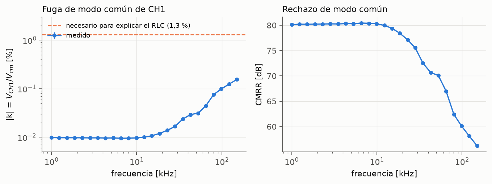
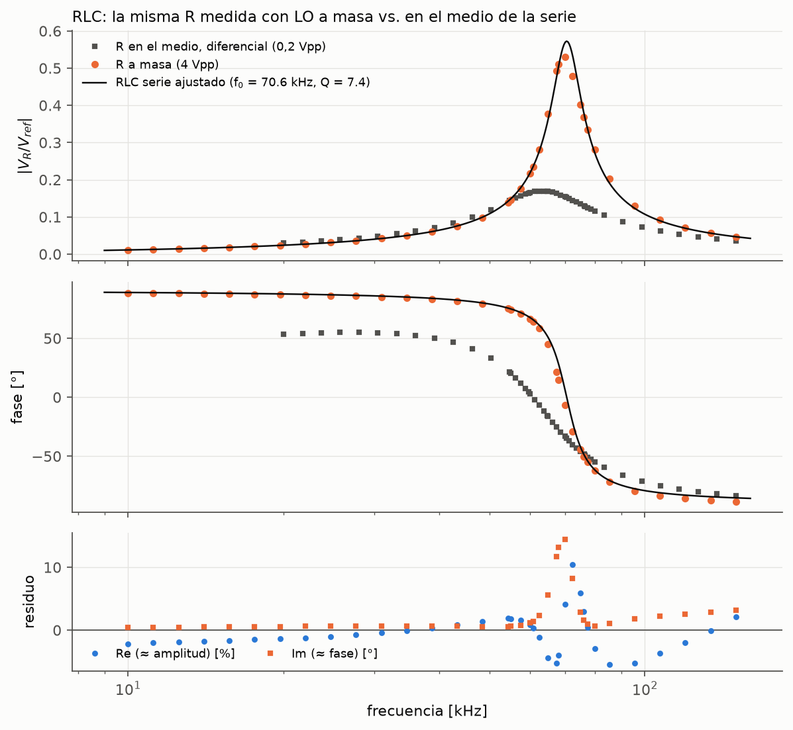
⚠ AVISO: posible error de conexionado en las últimas pruebas (2026-10-08, tarde)
- El barrido con el sensor en paralelo a C y el primer “minuto de fase” se hicieron mal conectados (confirmado por el usuario) → datos descartados en
V3/validacion/DESCARTADO_mal_conectado_*yfase_minuto/DESCARTADO_mal_conectado/. - El usuario sospecha que las pruebas anteriores también pudieron estar mal conectadas: Prueba 1 (CMRR,
cmrr_ch1/), Prueba 2 (R a masa,rlc_r_masa/) y posiblemente la de Zin (zin_ch2/). Sus conclusiones (CMRR = 80 dB descarta el modo común; con R a masa desaparece la anomalía; Zin = 46 MΩ ∥ 4,6 pF) quedan PENDIENTES DE VERIFICACIÓN hasta revisar el cableado y repetirlas. - Lo que no depende de esas conexiones sigue válido: validación con la misma señal en CH0 y CH1 (calibración, linealidad, continuidad, FDF), datos de la Tesis.
- Hallazgo independiente del cableado: el lock-in con
filter_mode’butter’= y corte de 10 Hz a 500 kHz es numéricamente inestable (forma b,a) → diverge.butteres el default deget_amplitude_and_phaseylock_in. Arreglo:sos+sosfiltfilt. El modoexponentialfunciona.
Sensor en paralelo a C, medición diferencial sobre R (bien conectado, v3)
- Barrido 0,2 Vpp (
rlc_sensor_0.2Vpp_v3/): RLC con fase 0° en ~54 kHz, pico |VR/Vref| = 0,136 en ~60 kHz; misma anomalía de baja f (+33° a 20 kHz). ⚠ CH0 lee hasta 0,27 Vpp con 0,2 Vpp programados (y 1,286 Vpp con 1 Vpp): imposible en bornes del AFG → revisar dónde está CH0. - Minuto a 54 kHz, 1 Vpp, salida encendida a t = 0 (
fase_minuto/sensor_v2_54000Hz.*,lockin_bloques30.py,figura_fase_minuto.py):- Hay una exponencial al encender: fase +0,100 ± 0,002° con τ = 1,69 ± 0,06 s; |VR| +0,144 % con τ = 1,24 ± 0,03 s. |Vref| no la muestra (τ ≈ 7 s, mal definida) → no es la amplitud del generador.
- Después, deriva lenta de ~0,12° (sube hasta ~12 s y baja). Ruido de fase 0,008° por bloque de 10 ms.
- Lock-in del lab (bloques de 30 s, exponencial 10 Hz) reproduce lo mismo con un corrimiento de 0,17° (= 9 ns de retardo entre canales que el código supone 1 µs). Amplitud sesgada −8 % (normalización por max).
- El filtro exponencial del lock-in arranca de cero en cada bloque: transitorio propio de τ ≈ 50 ms (99 % a 170 ms) → no confundir con la exponencial física (la física es de 1–2 s y aparece en el ajuste senoidal crudo).
- ¿Electrónica? Pendiente de discriminar: repetir el encendido con la MISMA señal en CH0 y CH1 (si aparece → placa) y con el RLC SIN sensor (si desaparece → sensor/agua). Candidatos físicos: calentamiento de R/L/sensor, polarización de los electrodos en el agua.
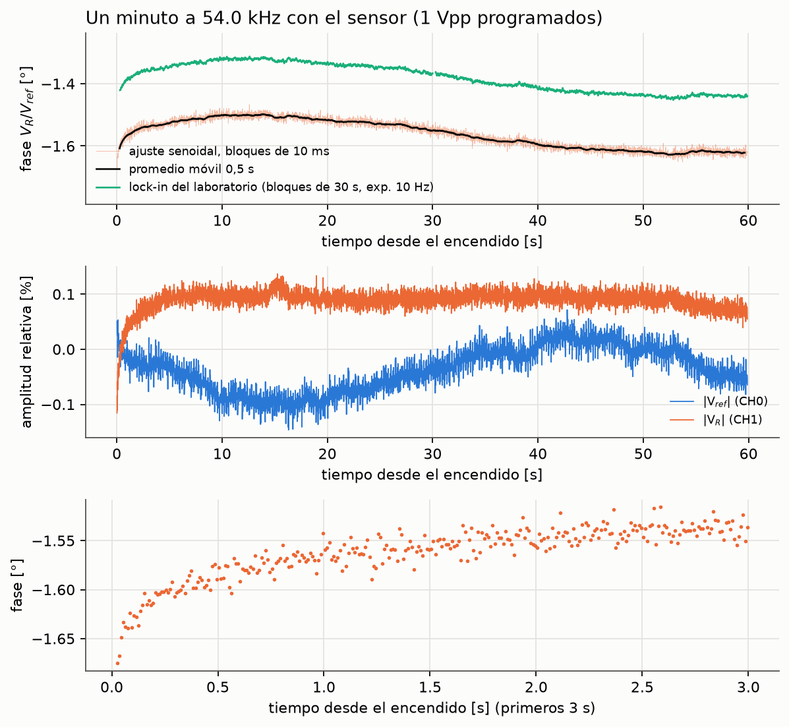
Exponencial de encendido con el sensor (sin sumergir) — búsqueda del origen
Versión del lock-in: desde acá, SIEMPRE la más nueva y corregida: Posgrado/Software Compu Sala/Pruebasa analizar/Analizador fase corregida/lock_in_numba_hilbert.py, lock_in(..., filter_mode’exponential’, cutoff=2000, trimoutput=True)= (trim n/N; la vieja de Faraday Sensor usa sqrt(n/N), mal). Descartar los primeros ~20 ms de cada bloque (arranque del filtro + borde del trim). Script: V3/validacion/lockin_corregido.py.
- 10 Vpp, x1, 54 kHz, un minuto (
fase_minuto/sensor_x1_10Vpp_*): la fase baja de 13,32° a 12,88°; dos exponenciales: 0,32° con τ = 1,0 s y 0,22° con τ ≈ 26 s; oscilación lenta de ~0,02° (período 1,2–1,6 s, sin identificar). Serie 1 / 2,5 / 5 / 7,5 / 10 Vpp (
serie_amplitudes/, 20 s cada una, 15 s apagado entre medidas):Vpp fase final Δφ del transitorio τ rápido τ lento 1 +20,04° 0,08° 0,8 s ~37 s 2,5 +19,17° 0,21° 0,6 s 9 s 5 +16,71° 0,43° 0,5 s 11 s 7,5 +14,27° 0,43° 0,4 s 6 s 10 +12,95° 0,50° 0,35 s 5 s - La fase de equilibrio depende de la amplitud (−7° de 1 a 10 Vpp) y ese cambio es instantáneo (< 20 ms) → no es térmico: es una no linealidad (un componente cuyo valor depende de la tensión). El transitorio va en el mismo sentido y crece con la amplitud → probablemente el mismo mecanismo con relajación lenta (o calentamiento).
- Además, memoria de largo plazo: a 1 Vpp la fase era −1,5° en la medición anterior y +20° en esta serie (minutos después, tras correr 10 Vpp).
- La placa queda prácticamente descartada para el efecto de amplitud: es lineal (0,004 %) y con la misma señal en ambos canales el cociente no depende de la amplitud.
- Candidato principal: el capacitor cerámico si es de clase II (X7R/Y5V: pierde capacidad con la tensión y tiene relajación dieléctrica de segundos; con 10 Vpp recibe ~13 Vpp). Otros: núcleo de la bobina, el propio sensor. Próximos pasos: ver qué tipo de capacitor es y reemplazarlo por C0G/NP0 o de film; o repetir la serie sin el sensor.
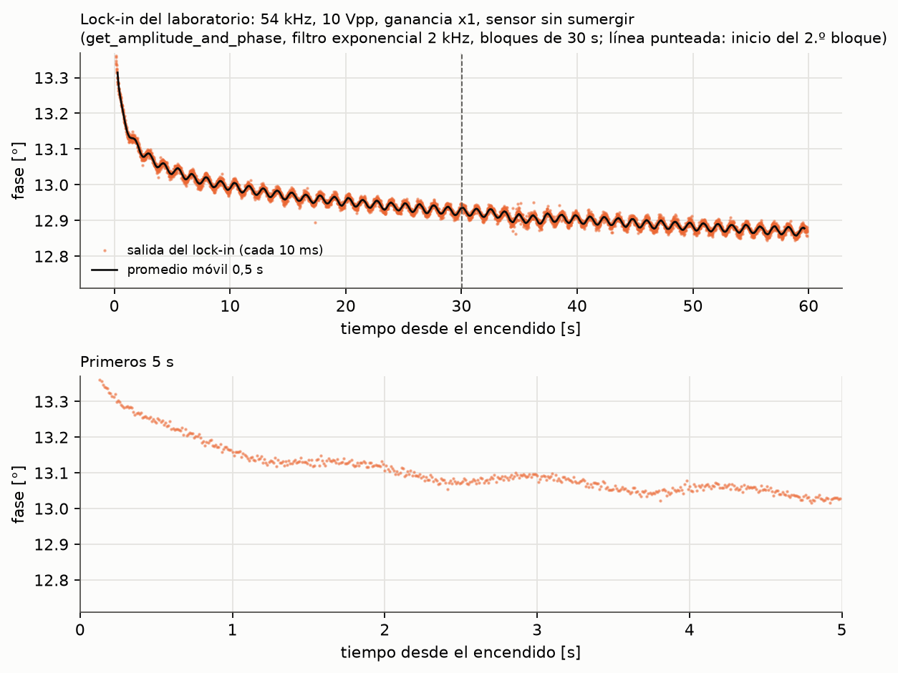
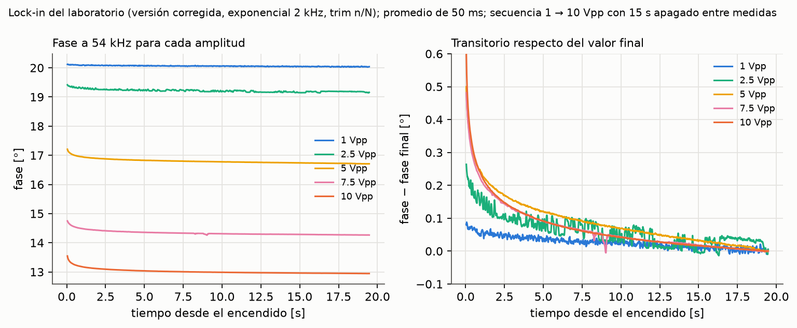
τ en función de la amplitud
- τ rápida (2 exp.): 0,76 ± 0,16 / 0,61 ± 0,20 / 0,50 ± 0,03 / 0,42 ± 0,03 / 0,35 ± 0,02 s para 1 / 2,5 / 5 / 7,5 / 10 Vpp → τ ∝ V(−0,50 ± 0,06) (2,5–10 Vpp). Con 1 exponencial: τ ∝ V(−0,45 ± 0,14). Incertezas infladas por la correlación de residuos.
- Un calentamiento lineal (Newton) daría τ independiente de la amplitud (sólo cambia el tamaño, ∝ V²) → el τ que baja con la amplitud va en contra de un efecto térmico simple y a favor de una relajación activada por el campo en un componente no lineal.
- No discrimina capacitor vs bobina: tanto un cerámico de clase II (dominios ferroeléctricos) como un núcleo de ferrita (desacomodación magnética) muestran relajaciones más rápidas a mayor campo, y ambos aumentan C o L con la amplitud (→ f0 baja → fase baja, como se ve). Prueba decisiva: cambiar C por C0G/NP0 o film (y/o la bobina por una de aire). Repetir la serie en orden inverso (10 → 1 Vpp) para descartar efectos de historia.
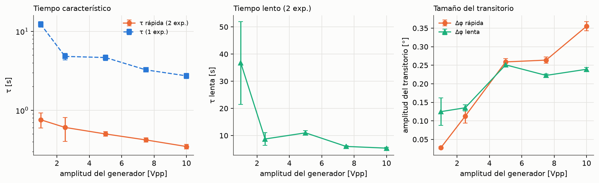
✅ Prueba del capacitor solo (RC): el disco cerámico es el origen
- Montaje: AFG(+) → Rs 388 kΩ → disco azul (“560 pF”) → masa; CH1 sobre C contra masa (
circuitos/prueba4_rc.pdf). Barrido a 1 Vpp: τRC = 12,9 µs (fc = 12,3 kHz) → 33 pF efectivos si R = 388 kΩ (o 23 kΩ si C = 560 pF): verificar armado. - Serie a 12,3 kHz, 1→2,5→5→7,5→10→7,5→5→2,5→1 Vpp (15 s on / 20 s off), lock-in corregido (
rc_capacitor/serie/,analisis_serie_rc.py):- Fase −43,22° (1 Vpp) → −44,82° (10 Vpp): C +5,5 % con la tensión (0,29°/%).
- Histéresis: al volver, −43,87° a 1 Vpp (0,65° ≈ 2 % de C retenido) → memoria.
- Exponencial al encender subiendo: 0,04–0,08°, τ 2,4 → 1,3 s (baja con la amplitud); bajando se invierte y es más lenta.
- Mismas tres firmas que con el sensor → el capacitor de disco (dieléctrico clase II, ferroeléctrico) es el origen de la exponencial y de la dependencia con la amplitud. Reemplazar por C0G/NP0, mica o film.
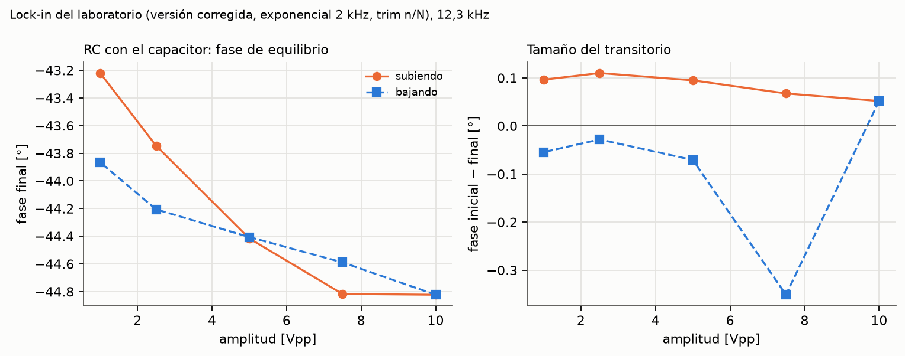
Repositorio para GitHub
Armado en ~/Documentos/PersonalDaq3001-Linux (mismo estilo que el README de Comunicacion-con-instrumentos): driver PyIOTech/, ejemplos, tools/extraer_firmware.py (saca el firmware de pdaq3kld.sys y pdaq3k.sys, con verificación por hash), udev, docs/protocolo.md, GPLv2 (por pyIOTech). Sin firmware (propietario, en .gitignore). Falta: crear el repo en GitHub y hacer push (lo hace el usuario).
Bugs encontrados y corregidos durante las pruebas
- El archivo de disco podía terminar con un scan incompleto (cantidad impar de muestras con 2 canales) →
Formatter.readfallaría. Ahora sólo se entregan scans completos. AdcSetDiskFilequedaba activo para las adquisiciones siguientes y las sobrescribía. Ahora vale para una sola adquisición.
Ojo / pendientes
- Límite de la placa: 1 MS/s total (frecuencia × canales).
measure_interface.pytrae 1 MHz por defecto: con 2 canales la placa corre a ~500 kHz pero el metadata dice 1 MHz (también pasaba en Windows). El driver imprime un aviso. - CH1 tiene ~2 mV de offset distinto de CH0; la tabla de fábrica es por rango, no por canal.
- El pasa altos que veíamos no aparece con fuente de baja impedancia, Zin = 46 MΩ ∥ 4,6 pF no lo explica, y el CMRR medido (80 dB) tampoco. Con R a masa la anomalía desaparece. Mecanismo sin identificar.
- Origen del ruido impulsivo (lazo de masa generador/PC) a investigar.
- No implementado: DAC en forma de onda, triggers por hardware, DIO, contadores.
DacWtsin verificar. - Corregir la normalización de amplitud del lock-in (ajuste LS a
fr) y repetir el RLC a mayor amplitud.
[17:00] Cierre del día — dónde quedamos (Driver PDAQ Linux)
- Resultado principal: la exponencial de encendido y la dependencia de la fase con la amplitud vienen del capacitor de disco azul (cerámico clase II): el RC con sólo ese capacitor reproduce las tres firmas (C +5,5 % de 1 a 10 Vpp, histéresis, τ que baja con la amplitud). Ver la entrada “Driver PDAQ Linux” y el PDF.
- Repo para compartir:
~/Documentos/PersonalDaq3001-Linux(commit local, sin push, sin firmware). Falta decidir si va como carpeta hermana “Personal DAQ 3001 en Linux/” enComunicacion-con-instrumentos(separado de la de Windows) o como repo propio; y si los ejemplos se duplican o se referencian. - Pendientes: (1) cambiar el capacitor por C0G/NP0/film y repetir RC + sensor; (2) re-verificar Zin, CMRR y R a masa (posible error de cableado); (3) CH0 lee más que lo programado con el sensor; (4) arreglar normalización de amplitud y filtro butter del lock-in.